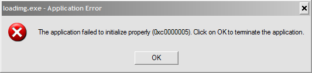
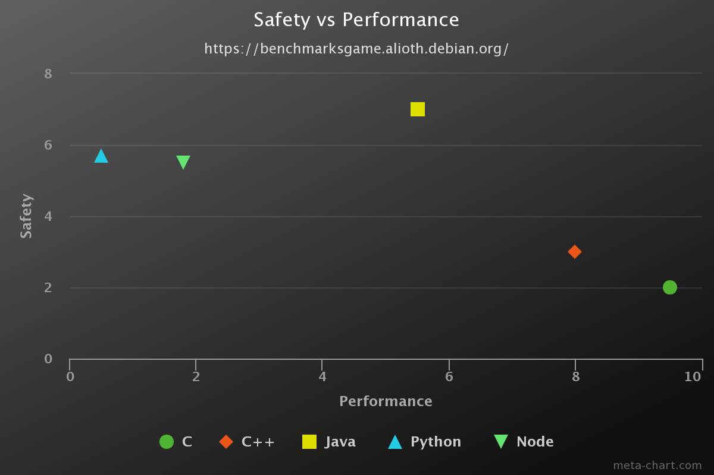

Let's work on Rust!
fn main() {
println!("வணக்கம்!");
}
whoami
- Full-stack dev (Swift, Rust, Docker, Typescript, etc.)
- {twitter, github}::wafflespeanut
- Organizer of Rust Chennai meetup
- Contributor to Servo browser engine (2015-2017)
- Now working on a bunch of open-source projects
Brief introduction
- Rigorous User-friendly Systems Technology
- Not Fe2O3, but a fungus!
- Systems programming language
- Performance without compromising safety
- No Garbage Collector!
- Zero-cost abstractions
- Fearless concurrency
- Strong static typing, generics, type inference, mutability, pattern matching, ...
... and a lot more buzzwords!
Why Rust?
Let's play with C/C++
To wit! Exhibit A
int *create_num() {
int a = 2; // assume some random number
return &a;
}
void main() {
int *raw_ptr = create_num();
*raw_ptr = 3;
}
Segmentation fault (core dumped)
Another?
void main() {
int *ptr = malloc(sizeof(int));
free(ptr);
// do some stuff
printf("DEBUG: Pointer value: %d\n", *ptr);
free(ptr);
}
double free or corruption (fasttop): 0x000000000201c010
And a lot more!!!
- Out of bounds indexing
- Iterator invalidation
- Null pointer dereference
- Data races in parallelization
Why care?
Segfaults! Crashes! Memory leaks!
From OS and compilers to browser and game engines, C/C++ is almost everywhere!
Why not use something else?
Why not use something else?

Existing solutions use GC
- Coder creates objects. Computer removes them.(no explicit "malloc" or "free")
- Tracing GC: It doesn't know when to remove objects. Tracks them periodically.
- RC-based GC: Atomic operation (expensive).
Not good enough!
- More CPU and memory - Intensive care required for real-time applications.
- Less control over objects.
- Limited concurrency - Global locking
Fast, Reliable, Productive.
- Pick three!
Core concepts
(Good stuff!)
- Mutability
- Ownership
- Borrowing
- Lifetimes
COMPILE TIME
Mutability
(Variables are immutable by default)
let i = 5;
i = 10; // NOPE!
error: re-assignment of immutable variable `i`
let mut i = 5; // explicitly mark it as `mut`
i = 10; // Okay now!
Ownership
|
Magic book
(resource)
|
The Chosen One
(owner)
|
struct Thing { name: String }
fn main() {
let thor = Thing { name: "Mjolnir".into() };
}
let foo = Thing { name: "secrets".into() };
let bar = foo;
println!("{}", foo.name);
error: use of moved value `foo.name`Questions?
Projects using Rust
Ecosystem
Resources
- Book - https://doc.rust-lang.org/book/
- Standard library - https://doc.rust-lang.org/std/
- Rust by example - https://rustbyexample.com/
- Playground - https://play.rust-lang.org/
Community
- IRC:
- Reddit: https://reddit.com/r/rust/
- Forum: https://users.rust-lang.org/
- Blog: https://blog.rust-lang.org/